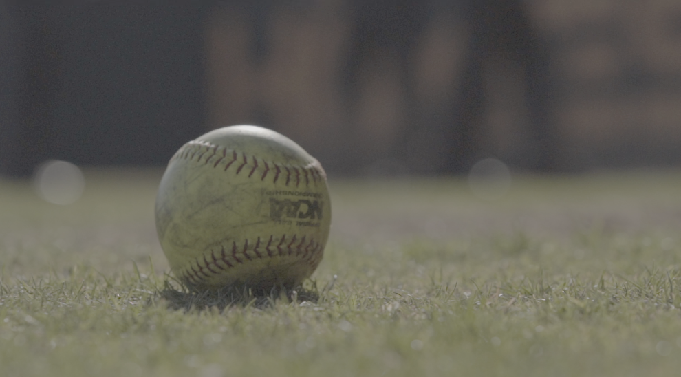

College Gameday: Behind the Scenes
Have you ever wondered how a college sports broadcasted is produced? Well, for Virginia Tech, there is a team made up of producers, directors, production assistants and engineers that are in a control room to make that happen!your post.
The Lyrebirds Podcast: How the Media Portrays Crime
How The Media Portrays Crime The Lyrebirds.

Virginia Tech Softball Promo Video
The Virginia Tech softball team has been nationally ranked in the top 25 all season.On the hunt for a NCAA title!.
Another resource will go here?

We've packed a lot into this one - shredded cabbage, carmalized onions, deep-fried chicken, chipotle mayo, half-sour pickles, and a toasted sesame bun will leave you thoroughly satisfied!